Краткое руководство по расчёту системы снеготаяния
Исходные данные
- Город / регион — определяет климатические параметры (T_холодной пятидневки, ветер, влажность)
- Интенсивность снегопада — мм/ч (водяной эквивалент)
- Пирог покрытия — материалы и толщины слоёв над и под трубой
- Уровень грунтовых вод (УГВУровень грунтовых вод. Влияет на выбор λА (сухие) или λБ (влажные) для слоёв под трубой)
- Тип трубы — RAUTHERM S (17 / 20 / 25 × 2.0 мм)
- Тип и концентрация гликоля — этиленгликоль / пропиленгликоль, 10–90 %
- Контуры — количество, длины, площади, подводки
Шаг 1 — Климат
- Ввести город в строке поиска → выбрать из списка.
- Автозаполнятся: T_воздухаРасчётная температура наружного воздуха, °C. Определяется по T5Days092: ≥−27 → −10, −37…−27 → −15, <−37 → −20, скорость ветра, влажность, климатическая зона.
- Что можно изменить вручную: T_воздуха (для более сурового микроклимата), скорость ветра / влажность (по локальным данным).
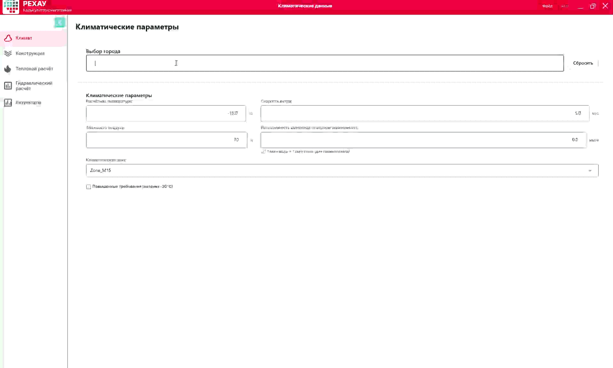
- Кнопка «Сбросить к данным города» — восстанавливает авто-расчётные значения T_воздуха и ветра.
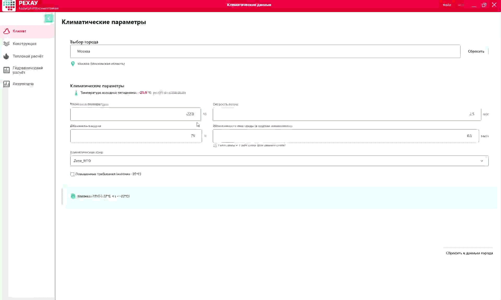
- Флаг «Повышенные требования» — принудительно T_воздуха = −20 °C.
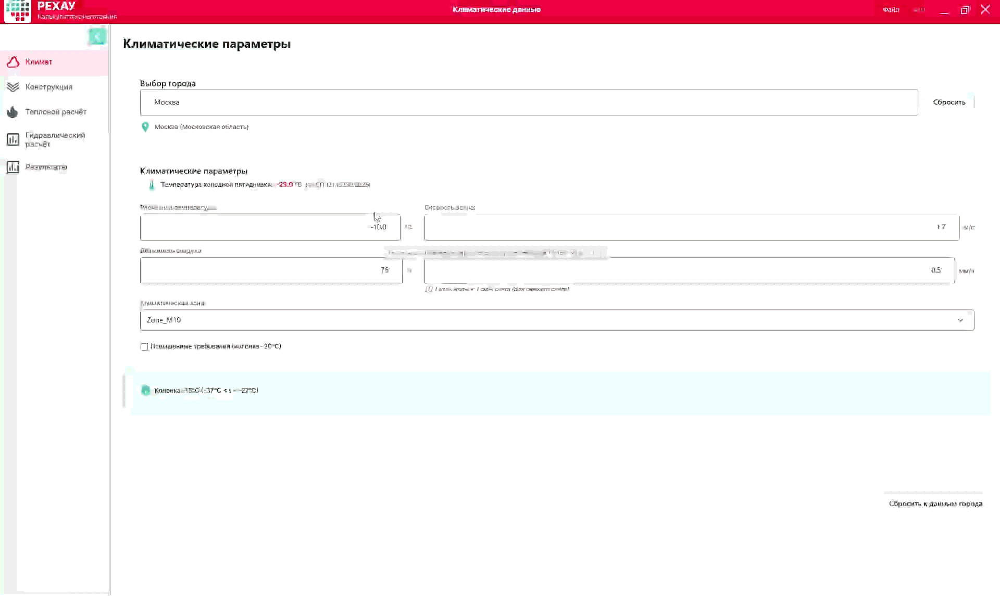
Валидация: T_воздуха −50…+10 °C · Ветер 0.1–30 м/с · Влажность 20–100 % · Снегопад 0–20 мм/ч
Перейти к следующему шагу: «Далее»
Шаг 2 — Конструкция
- Добавление слоёв: выбрать материал, задать толщину и λКоэффициент теплопроводности, Вт/(м·К). Определяет способность материала проводить тепло. Программа пересчитывает RТермическое сопротивление, м²·К/Вт. R = толщина / λ.
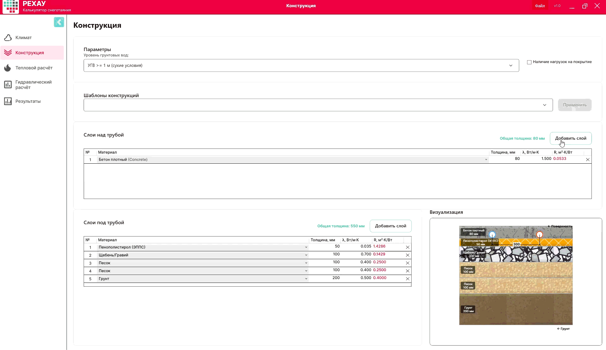
- Удаление слоя — кнопка удаления рядом со слоем.
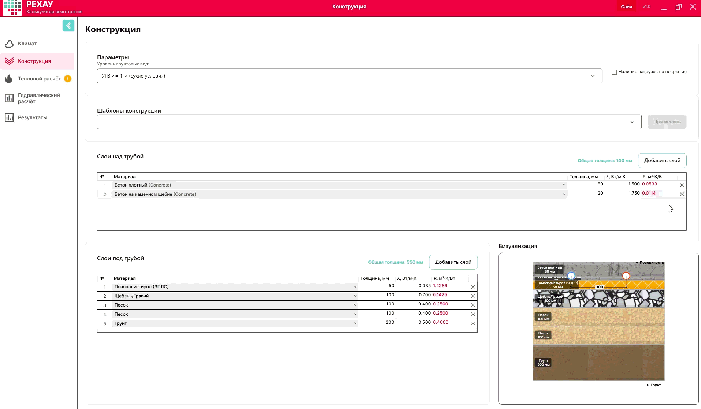
- Уровень грунтовых вод:
- УГВУровень грунтовых вод относительно трубы, м ≥ 1 м → λА (сухие)
- УГВ < 1 м → λБ (влажные)
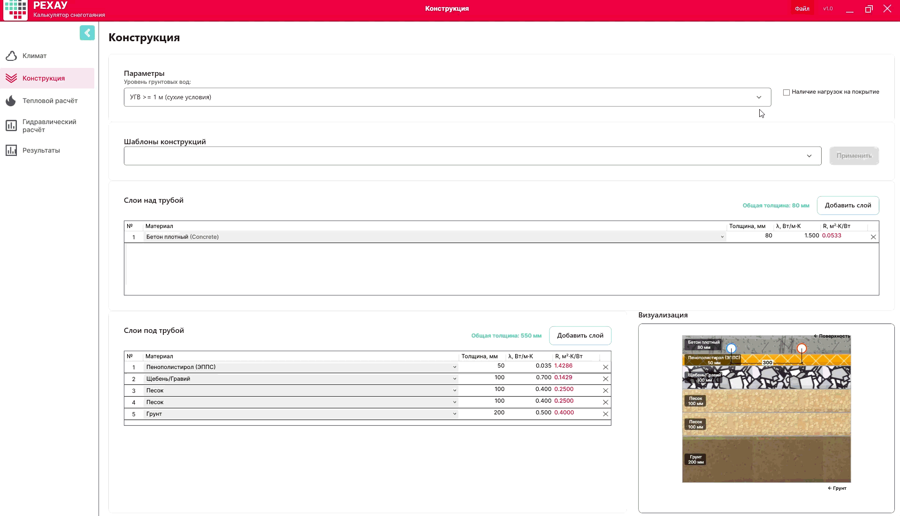
Ограничения: толщина над трубой ≥ 40 мм (без нагрузок) / ≥ 50 мм (с нагрузками) · Бетон: T_подачи ≤ 50 °C · Асфальт: T_воздуха ≥ −15 °C
Перейти к следующему шагу: «Далее»
Шаг 3 — Тепловой расчёт
- Выбор режима: Антиобледенение (+3 °C) / Таяние (+5 °C) / Интенсивный (+7 °C). При смене — бейдж пересчёта → «Рассчитать».
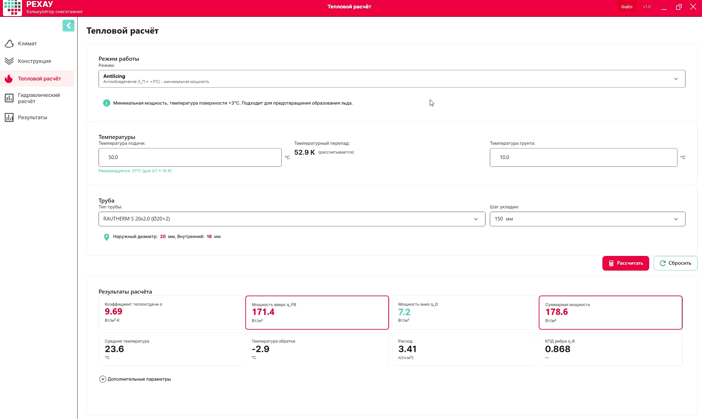
- Выбор трубы и шага укладки.
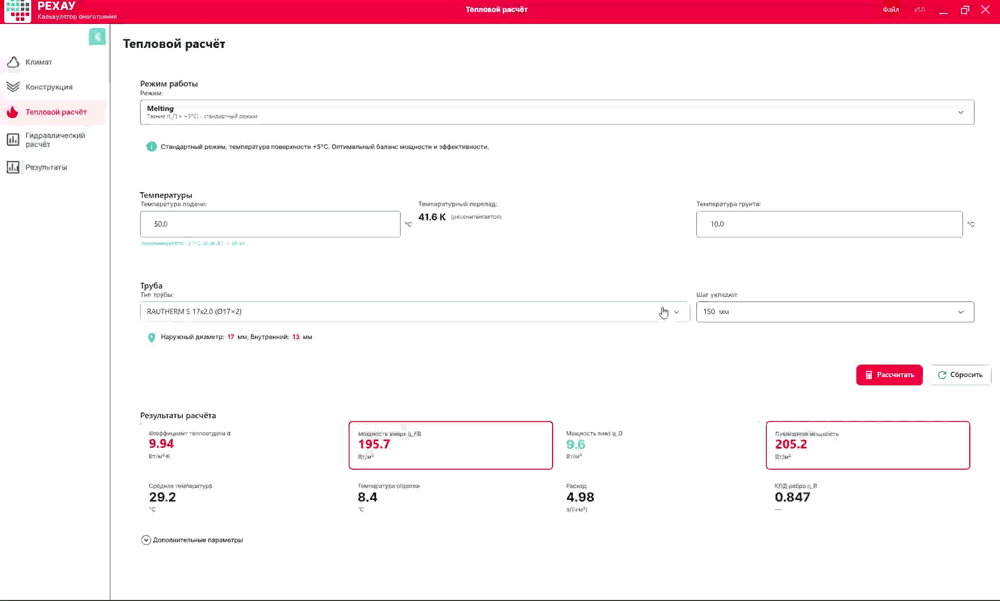
- Температура подачи. Программа рекомендует ΔTТемпературный перепад между подачей и обраткой, К. Рекомендуется ≈ 15 K ≈ 15 K. Пользователь корректирует T_подачи.
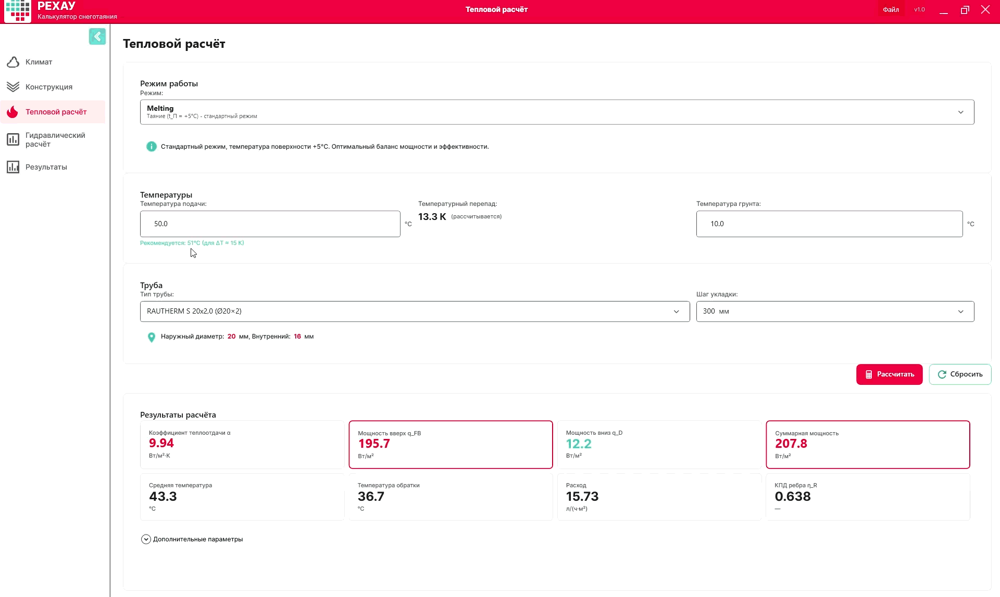
- Просмотр дополнительных расчётных параметров (Q_таяние, Q_конв, КПД ребра ηRКоэффициент эффективности ребра (теплоотдачи трубы). Рассчитывается по теории стержня, параметр mХарактеристический параметр ребра, 1/м, сопротивления R1, R2 и др.).
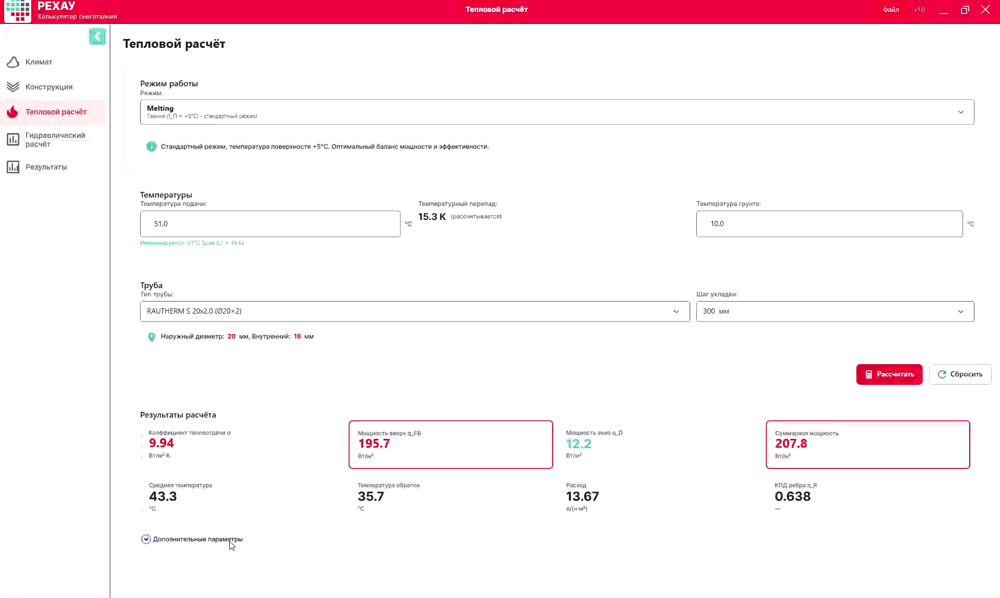
Результаты: αКоэффициент теплоотдачи поверхности, Вт/(м²·К). Зависит от разности температур и скорости ветра · PowerUp · q_D · q_total · T_средняя · T_обратки · ΔT · Удельный расход
Проверки: T_подачи > T_средняя · ΔT ≤ 30 K · T_обратки > T_замерзания
Перейти к следующему шагу: «Далее»
Шаг 4 — Гидравлика
1. Выбор гликоля
Тип и концентрация. Свойства теплоносителя (ρПлотность теплоносителя, кг/м³, c_pУдельная теплоёмкость, кДж/(кг·К), νКинематическая вязкость, мм²/с, λ_теплТеплопроводность теплоносителя, Вт/(м·К), PrЧисло Прандтля — отношение вязкости к температуропроводности) пересчитываются автоматически.
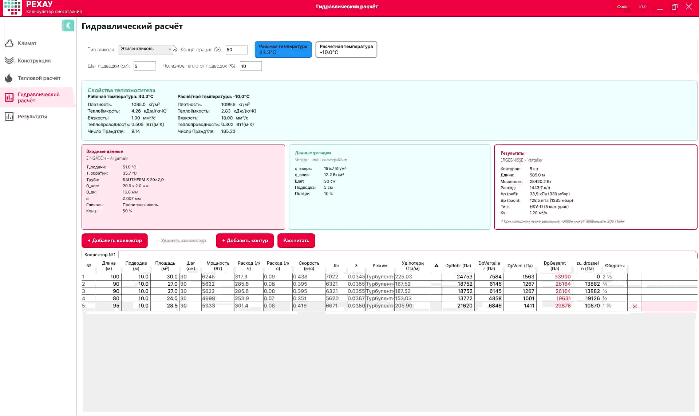
2. Параметры подводок
Шаг подводки (по умолчанию 5 см) и доля тепла от подводок (по умолчанию 10 %).
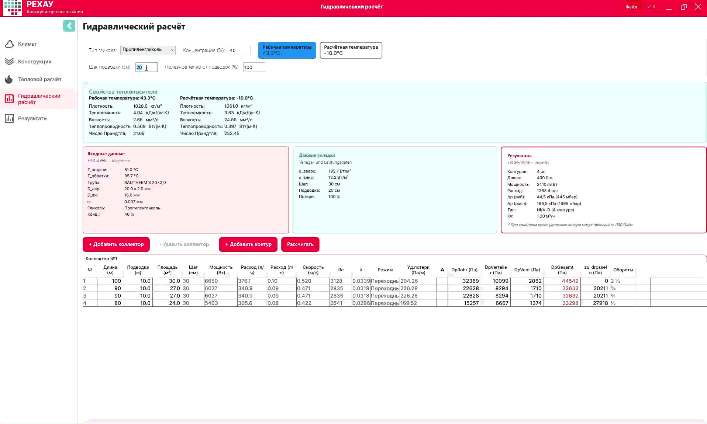
3. Заполнение контуров
Длина или площадь. Добавление / удаление контуров.
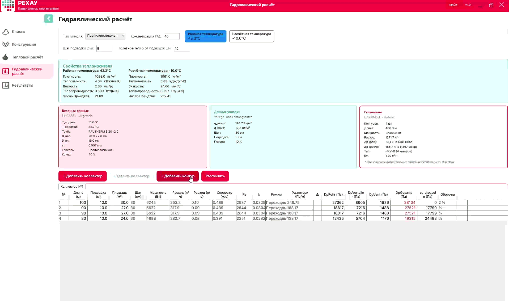
⚠️ Известная особенность: Контуры могут добавиться с шагом, отличным от заданного в тепловом расчёте. Workaround: перейти в Шаг 3, изменить шаг укладки, рассчитать, вернуть нужный шаг, рассчитать снова.
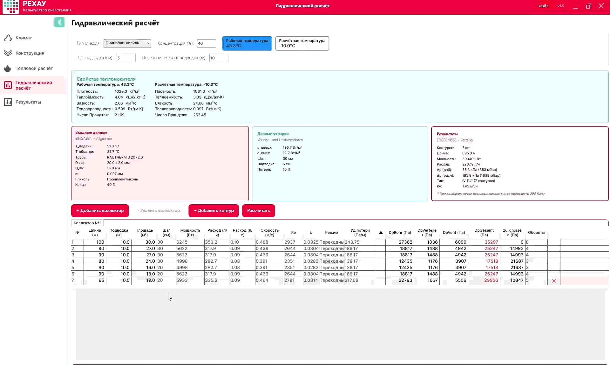
4. Автоподбор коллектора
| Суммарный расход | Коллектор | KvКоэффициент пропускной способности клапана, м³/ч |
|---|---|---|
| ≤ 1.5 м³/ч | HKV-D | 1.2 |
| 1.5–2.5 м³/ч | IV 1¼" | 1.45 |
| 2.5–7.0 м³/ч | IV 1½" | 1.5 |
При превышении порога 1.5 м³/ч тип коллектора в результатах меняется автоматически.
5. Добавление / переключение коллекторов

6. Подсветка превышений
Контуры с RУдельные потери давления в трубе, Па/м > 300 Па/м подсвечиваются.
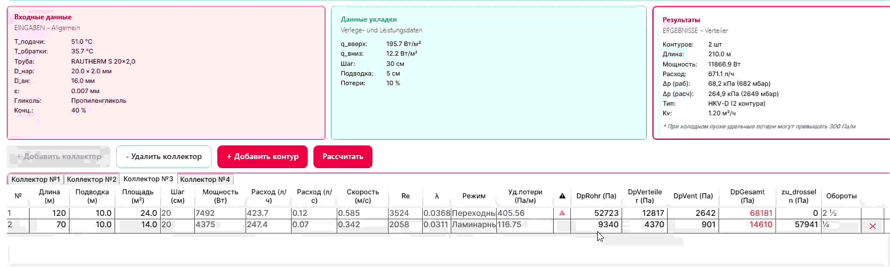
7. Рабочая / Расчётная температура
Переключение между режимами. При расчётной температуре (холодный пуск) вязкость νКинематическая вязкость, мм²/с. При низких температурах значительно возрастает у гликолей резко растёт → ReЧисло Рейнольдса — критерий режима течения. Re < 2300 — ламинарный, 2300–4000 — переходный, > 4000 — турбулентный падает → λКоэффициент гидравлического трения. Определяется по режиму течения и ΔpПотери давления, Па. Δp = DpRohr + DpVerteiler + DpVent растут.
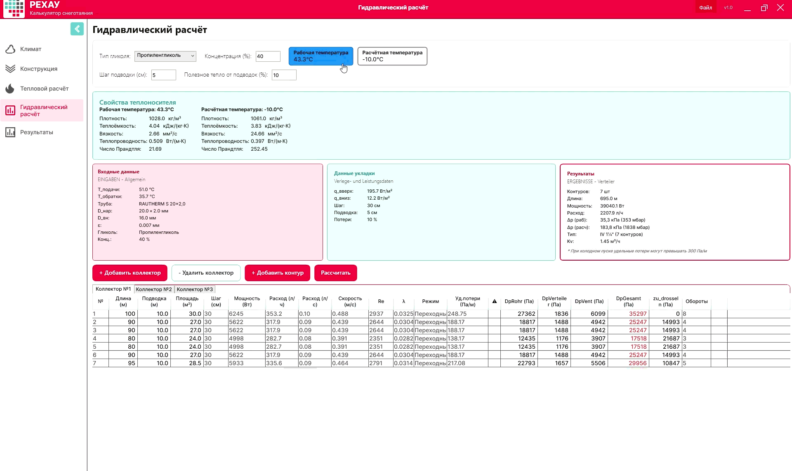
Валидация: v 0.1–2.0 м/с · R ≤ 300 Па/м · Δp ≤ 320 мбар (рабочий режим)
Перейти к следующему шагу: «Далее»
Шаг 5 — Результаты
- Сводка: объект, площадь, контуры, режим, температуры, мощность, расход, коллектор, потери давления
- Таблица контуров: расход, скорость, Re, λ, потери, KvКоэффициент пропускной способности для балансировки, м³/ч, обороты вентиля
- Параметры теплоносителя: ρ, c_p, ν, λ_тепл, Pr при рабочей и расчётной температуре
- Экспорт PDF
- Сохранение проекта: заполнить номер проекта и наименование → «Сохранить»

Перейти к следующему шагу: «Далее»
Советы
| Ситуация | Рекомендация |
|---|---|
| ΔpПотери давления на коллектор, мбар. Предел — 320 мбар > 320 мбар (рабочий) | Уменьшить длины контуров или разделить на 2 коллектора |
| T_обратки < 0 °C | Поднять T_подачи |
| vСкорость потока теплоносителя в трубе, м/с < 0.1 м/с | Увеличить ΔTТемпературный перепад, К или уменьшить число контуров |
| v > 2.0 м/с | Уменьшить ΔT или увеличить число контуров |
| Длина контура > 120 м (Ø20) | Разбить на несколько контуров |
| Холодный пуск > 320 мбар | Нормально для запуска — предусмотреть насос с запасом напора |
| T_обратки < T_замерзания | Сменить гликоль на более концентрированный или поднять T_подачи |
| T_подачи > 50 °C (бетон) | Предупреждение — решение за проектировщиком |